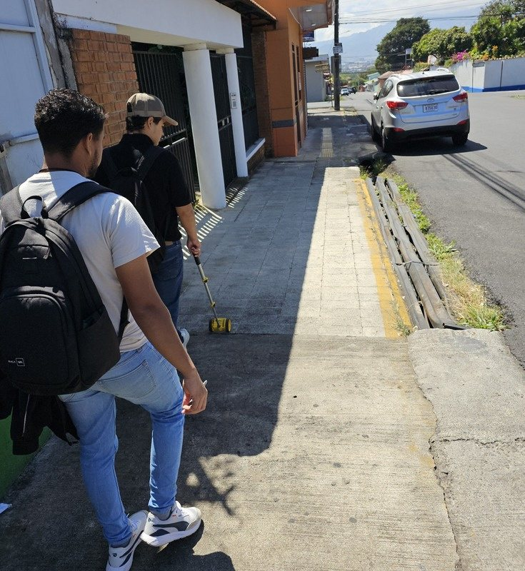

Aceras y ruido
Hace el inventario de las aceras del centro de Santo Domingo, con la metodología de Lanamme UCR (2017) adaptada al cantón.
Desarrolla un sistema de información geográfica con aplicación móvil y visión por computador para priorizar las mejoras.